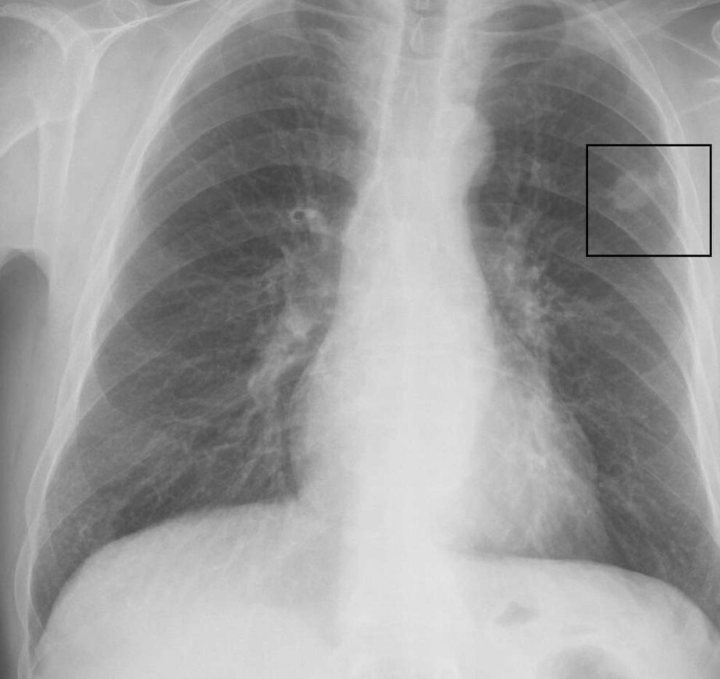

The kinds of data AI can use, how each becomes numbers, and where the "right answers" come from
AI learns from examples, and those examples are called data. This lesson shows the main kinds of data AI can work with, how a computer turns each one into numbers, and how much space they take. Then it looks at the "right answers" a model learns from, using PTX-Detect, a made-up tool that spots a pneumothorax (collapsed lung) on chest X-rays. It comes back throughout Module 1..
By the end of this lesson you can:
Data is any information that has been recorded: a blood pressure in a chart, a photo, a voice message, a heart tracing. AI models learn from data, but underneath, a model can only do arithmetic. It cannot read a word or look at a picture the way you do. So before any learning happens, every kind of data has to be turned into numbers.
Data matters more than almost anything else in AI. A model has no textbook, no anatomy course and no common sense. Everything it knows comes from the examples it was shown. Two teams using the same method with different data will build two different tools, which is why building medical AI usually means spending most of the time collecting, cleaning and labeling data, not writing code.
That sounds like a big step, but each kind of data has a simple, standard way of becoming numbers. Pick a kind below, then press the button to see it the way a computer does.
Some models use one kind of data; others combine several, such as a chest X-ray plus the patient's age and lab results. Data that fits neatly into rows and columns, like the table, is called structured data. Text, images, sound and signals are unstructured: there is no ready-made column for "the finding," so they take more work to use, often a model of their own.
Images are the main kind of data in radiology, so look a little closer. The same picture can be stored with a few pixels or with many. Pick a size.
Pixels along each side
More pixels show more detail, but every pixel adds numbers to store and to process. Medical images are mostly gray, so they store one brightness number per pixel instead of three. Even so, a chest X-ray has several million pixels, and a CT scan is a stack of hundreds of images. Module 2 explains how these images are made.
Most medical AI learns by example: it is shown many cases together with the right answer for each one, and it learns to give the same answers on its own. That right answer is called a label. For PTX-Detect, every training film needed a label saying whether it shows a pneumothorax. Because the model treats labels as true, they are often called ground truth.
For images, labels come in three main kinds, and each one teaches a model a different job. Classification gives one answer for the whole image. Detection draws a box around each finding. Segmentation marks every pixel that belongs to the finding. Try making each kind yourself on real chest X-rays. To keep it easy, the finding here is not a subtle pneumothorax but a large lung mass: a solid lump in the lung more than 3 cm across, often a cancer.
"R" marks the patient's right side, which is on your left. The expert outlines were drawn for this lesson as a teaching example.
More detailed labels teach a model more, but they cost far more expert time. That is why most large medical datasets have only classification labels, and why segmentation datasets are small and precious.
Labels also differ in where they come from. The cheapest are mined from old reports by software. Better is an expert read, where a radiologist labels each image, and better still is a consensus of several readers. The most reliable is a reference test, such as a CT scan or a biopsy result, but that is only available for some patients. Each step up costs more time and money.
Labels can be wrong for many reasons. Radiologists disagree with each other on subtle films, as the second expert above shows. Reports are written for clinicians, not for computers, so software that mines them misreads phrases like "no definite pneumothorax" or "pneumothorax has resolved." And sometimes the true answer is not knowable from the image alone. If 10% of the labels are wrong, the model learns those mistakes as if they were correct, and its test score is measured against a flawed answer key.

A model only learns what is in its data. If PTX-Detect was trained only on adults at one city hospital, it has never seen a child, a rural clinic's older scanner, or many patients from groups that hospital rarely serves. It may still give confident answers for them, without having learned anything about them.
The same is true of quality. Blurry images, mislabeled examples or records full of typing errors all get learned along with everything else; the model cannot tell good examples from bad ones.
So two questions to ask of any dataset: who is in it, and who is missing? Lesson 1.5 shows what happens when a model meets patients unlike the ones it learned from.
Computers measure storage in bytes. One byte holds one small number, about enough for one letter of text. A kilobyte (KB) is a thousand bytes, a megabyte (MB) a million. Each step along these bars is about ten times bigger than the last.
Approximate sizes. Red bars are medical images.
One CT scan can take as much space as three million rows of lab results. This is why hospitals keep images in their own archive, separate from the health record, and why training an image model takes far more computer power than training one on a table of lab values.
Answer each question to continue. Any answer is fine; read the explanation.
To a computer, what is a chest X-ray?
Every kind of data has to become numbers before a model can use it. An image is a grid of pixel values, and text and sound are turned into numbers too. Module 2 shows how radiology images store these values.
Labels for a model were mined automatically from old radiology reports. What is a likely weakness?
Report mining is fast and cheap, but noisy. Hedged or negative phrases are easy to misread, and the report may describe something not visible on that particular image.
A hospital ECG measures the heart's electrical signal 500 times a second. How many numbers does a 10-second recording from one lead hold?
500 measurements a second for 10 seconds is 5,000 numbers. A standard ECG records 12 leads at once, so 60,000. Signals over time pile up numbers quickly, which is why even "small" medical data can be large.
Next lesson: how a model like PTX-Detect learns from this data.
Chest X-rays from Wikimedia Commons. Lung mass: "Lung cancer in xray" by Dr. Charalampos Gkouvas (Harrygouvas), CC BY-SA 3.0; made gray, arrows removed and cropped for this lesson. Normal: "Normal posteroanterior (PA) chest radiograph (X-ray)", CC0; cropped. Nodule with box: "Thorax pa peripheres Bronchialcarcinom li OF markiert" by Lange123, CC BY-SA 3.0.